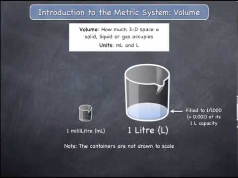

| Volume unit | Conversion factor |
|---|---|
| Cubic metre (m3) | 1 m3 = 1 m3 |
| Litre (L) | 1 L = 0.001 m3 |
| Kilolitre (kL) | 1 kL = m3 |
| Gallon | 1 gal = 0.00454 m3 |
| Cubic yard | 1 cu.yd = 0.76455 m3 |
| Cubic foot | 1 cu. = 0.0283 m3 |
Volume measurements work slightly differently from others. Firstly, it only works with length/width measurements (meters). Secondly, it is three dimensions, meaning 1 kilometer does not also equal 1 kilometer cubed. Volume also has its own base, the liter. But, there are still simple conversions within the 3 measurements, shown in the table.
